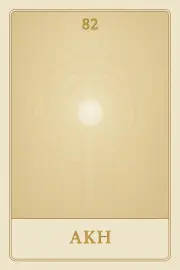
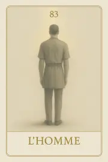
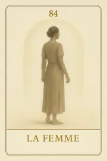
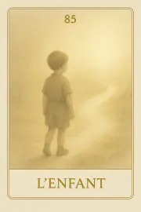

Archétypes – Union et Humanité incarnée
Les quatre archétypes de Seshat — Akh, L’Homme, La Femme, L’Enfant — ne guident plus : ils témoignent. Ils incarnent ce que l’on devient lorsque le cycle est accompli, que l’on ne cherche plus à comprendre mais simplement à être.
Carte 82 – Akh
Mots-clés : Akh, archétype de lumière pure dans l’oracle Seshat. Il incarne l’état d’être accompli : au-delà des cycles, il n’y a plus de quête, seulement la clarté d’être.
Numérologie :
Planète principale : Aucune (Symbole divin ancien)
Divinité principale : Aucune
Planète secondaire : Aucune
Divinité secondaire : Aucune
Interprétation de la carte 82 : Akh (droite)
Lecture intuitive rapide
Tu n’as plus besoin de savoir. Tu n’as plus besoin de comprendre. Tu es. Et ce que tu es rayonne, sans volonté, sans attente. Akh ne cherche rien. Il est le fruit du chemin, le témoin silencieux de tout ce qui a été traversé. Aucune tension ne le traverse. Il ne nie rien, mais il n’est plus attaché à rien. Il ne prétend pas, ne se cache pas, ne joue plus. Il éclaire, simplement, ce qui est.
1. Caractère de la personne
Tu n’as rien à prouver. Tu n’as rien à défendre. Ce que tu es suffi. Tu n’as plus besoin de forme pour exister.
2. Plan affectif
Le lien ne te prend plus. Il ne te manque pas non plus. Tu es en lien parce que tu es en paix. Rien ne s’y accroche.
5. Plan spirituel
La lumière n’est plus un but. Elle est ce que tu es devenu. Tu ne la cherches pas. Tu l’habites.
Carte 82 : Akh (inversée)
1. Caractère de la personne
Tu veux être libre, mais tu refuses encore de déposer l’ancien. Tu nommes la paix, mais tu l’imites encore. Ce n’est pas un rôle : c’est un état.
2. Plan affectif
Tu dis ne plus dépendre, mais tu attends encore un signe. Tant que tu attends, tu n’es pas libre. L’Akh n’attend pas.
5. Plan spirituel
Tu veux être lumière, mais tu en fais une tension. Tu ne rayonneras pas tant que tu veux devenir. Il n’y a plus rien à devenir.
Résumé de la carte 82 : Akh
Akh est la carte de l’état d’être accompli, la lumière après tous les cycles. Elle ne propose rien. Elle constate. Elle ne guide pas : elle témoigne de ce qui est possible quand tout a été traversé. Elle dit : “Tu n’as plus rien à faire. Tu es devenu ce que tu étais déjà.”
Carte 83 – L'homme
Mots-clés : : L’Homme, archétype de l’action juste dans l’oracle Seshat. Il incarne la posture droite, l’engagement clair, et la force d’être debout dans le réel.
Numérologie :
Planète principale : Aucune
Divinité principale : Aucune
Planète secondaire : Aucune
Divinité secondaire : Aucune
Interprétation de la carte 83 : L'homme (droite)
Lecture intuitive rapide
Tu es là pour être debout, pas parfait. Tu es là pour sentir, chercher, tomber, te relever. Tu es là pour incarner, avec ton poids, tes limites, ta tension — mais aussi ton feu. L’Homme n’est pas celui qui maîtrise. Il est celui qui marche, qui porte, qui affronte. Pas pour dominer — mais pour tenir sa place dans l’axe du monde. Il est matière, il est mouvement, il est choix.
1. Caractère de la personne
Tu es là pour tenir une posture. Pas pour être aimé, mais pour être juste. Ta présence n’a pas à plaire. Elle a à être droite.
2. Plan affectif
Ce que tu offres n’est pas un besoin. C’est un engagement clair. Tu ne demandes pas d’être porté : tu tiens la main si c’est le moment, et tu la lâches quand il le faut.
5. Plan spirituel
Tu n’es pas lumière flottante. Tu es axe entre terre et ciel. Ta spiritualité passe par tes gestes, tes décisions, ta façon d’agir.
Carte 83 : L'homme (inversée)
1. Caractère de la personne
Tu veux être fort, mais tu fuis la responsabilité. Tu veux qu’on te suive, sans prendre vraiment position. Tu es flou — et tu le sais.
2. Plan affectif
Tu veux de la présence, mais tu n’offres pas d’ancrage. Tu parles de lien, mais tu ne t’y tiens pas.
5. Plan spirituel
Tu crois que le haut t’éclairera, sans poser tes pieds au sol. Mais tant que tu n’es pas incarné, rien ne descend vraiment.
Résumé de la carte 83 : L'homme
L’Homme est la carte de l’engagement incarné, de la posture droite, du choix volontaire. Elle ne parle pas d’identité : elle parle de présence claire, au cœur du réel. Elle ne demande pas la perfection, mais la cohérence. Elle dit : “Ta place est là. Prends-la.”
Carte 84 – La femme
Mots-clés : : La Femme, archétype de l’accueil vibrant dans l’oracle Seshat. Elle tient l’espace, habite le silence, et permet au monde de naître en elle sans volonté.
Numérologie :
Planète principale : Aucune
Divinité principale : Aucune
Planète secondaire : Aucune
Divinité secondaire : Aucune
Interprétation de la carte 84 : La femme (droite)
Lecture intuitive rapide
Tu n’as pas à faire. Tu es là — et c’est assez. La Femme ne construit pas : elle tient l’espace. Elle ne décide pas : elle laisse advenir. C’est en elle que le monde se déploie, parce qu’elle n’y résiste pas. Elle ne cède pas. Elle contient. Elle ne parle pas pour expliquer : elle parle quand c’est vrai. Et son silence dit plus que mille discours.
1. Caractère de la personne
Tu n’as pas besoin de te justifier. Ta présence est déjà une réponse. Ce que tu tiens en toi rayonne sans faire de bruit.
2. Plan affectif
Tu n’attends pas. Tu offres un espace où l’autre peut être. Tu ne prends pas : tu reçois, ou tu laisses.
5. Plan spirituel
Tu n’as pas besoin d’agir. Ce que tu es permet. C’est par ton silence que la lumière trouve sa voie.
Carte 84 : La femme (inversée)
1. Caractère de la personne
Tu veux être perçue, mais tu doutes encore de ta valeur. Tu te tais pour plaire, pas pour être vraie. Ce n’est pas de l’accueil : c’est de la peur.
2. Plan affectif
Tu attends d’être reconnue, mais tu te retires avant d’être vue. Tu ne laisses pas de place : tu l’occupes à moitié.
5. Plan spirituel
Tu veux être un canal, mais tu es pleine de bruit. Le silence n’est pas un vide : c’est une ouverture tenue.
Résumé de la carte 84 : La femme
La Femme est la carte de l’ouverture tenue, du vide fécond, de la présence intérieure qui contient sans dominer. Elle n’impose rien, mais elle n’abdique pas. Elle laisse être ce qui veut naître. Elle dit : “Ta présence est un espace. Que choisis-tu d’y laisser vivre ?”
Carte 85 – L'enfant
Mots-clés : : L’Enfant, archétype de l’élan pur dans l’oracle Seshat. Il n’attend rien, ne calcule rien : il avance, aime et offre ce qu’il est, sans retenue.
Numérologie :
Planète principale : Aucune
Divinité principale : Aucune
Planète secondaire : Aucune
Divinité secondaire : Aucune
Interprétation de la carte 85 : L'enfant (droite)
Lecture intuitive rapide
Tu n’as rien à défendre. Tu viens avec le cœur nu, les yeux ouverts, et le geste direct. Tu ne maîtrises pas. Tu tentes, tu joues, tu explores. Et parce que tu ne sais pas ce qui va arriver, tu es disponible à tout. L’Enfant ne prévoit pas. Il avance. Il ne retient pas. Il donne. Il n’a pas de stratégie — mais il a la vérité du mouvement.
1. Caractère de la personne
Tu es là, entier, sans stratégie. Ce que tu es sort tout seul. Et c’est ta vulnérabilité assumée qui crée la force du lien.
2. Plan affectif
Tu ne crains pas d’aimer. Tu donnes, sans calcul. Et si ça ne revient pas, tu vis quand même. Parce que c’est ce que tu es.
5. Plan spirituel
Tu ne cherches pas à savoir. Tu ressens, tu agis. Et ce que tu captes, c’est la vérité avant les mots.
Carte 85 : L'enfant (inversée)
1. Caractère de la personne
Tu veux être aimé, mais tu joues un rôle. Tu fais semblant d’être spontané, mais tu crains d’être vu pour de vrai.
2. Plan affectif
Tu attends un amour parfait, mais tu refuses d’offrir sans garantie. Tu ne veux pas souffrir — alors tu te retiens. Et tu rates la joie.
5. Plan spirituel
Tu veux sentir, mais tu bloques l’élan. Le vrai mystère ne se comprend pas : il se vit.
Résumé de la carte 85 : Heka
L’Enfant est la carte de la pure ouverture incarnée. Il ne prévoit rien, ne craint rien, n’attend rien. Il offre ce qu’il est, simplement. Il ne demande pas à être accueilli : il entre dans la vie. Elle dit : “Tu es déjà digne d’amour. Tu n’as rien à prouver.”